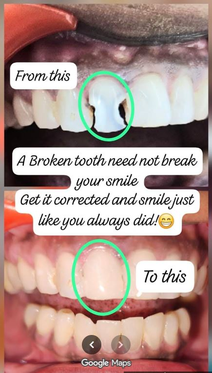

Professional dental care for the entire family.
Sivaasri Dental Clinic provides modern dental treatments with experienced dentists and state-of-the-art equipment.
Routine Oral examinations and consultations.
Fixing Broken teeth, Statined teeth, Bleeding Gums, Smile Makeovers, Veneers, etc
To replace single and multiplemissing teeth
Removal of teeth that are damaged beyond restoration
Impacted Teeth Removal
Tooth Coloured Fillings for dental caries and sealants to prevent dental caries
Pain-free advanced root canal treatments for dental caries
Removal of stains and dirt deposits on teeth
Digital intraoral X-rays RVG available
Tooth sensitivity issues can occur due to various reasons. We treat them effectively and make your everyday food intake easier.
Dental caries is one of the most common causes for tooth pain which can be diagnosed even before the pain occurs by routine dental check-ups.
Preventive check-ups typically designed for maintaining oral health without teeth pain or other issues in gums
Teeth alignment using invisalign or other aligners and braces

🦷 98765 43210
Work Hours:
Monday - Saturday: 10:00 AM - 8:00 PM
Sunday: Closed
Location:
27/484, Nageswaran South Street,
(Near Sri Padala Kaliamman Koil),
Kumbakonam, Tamil Nadu - 612001